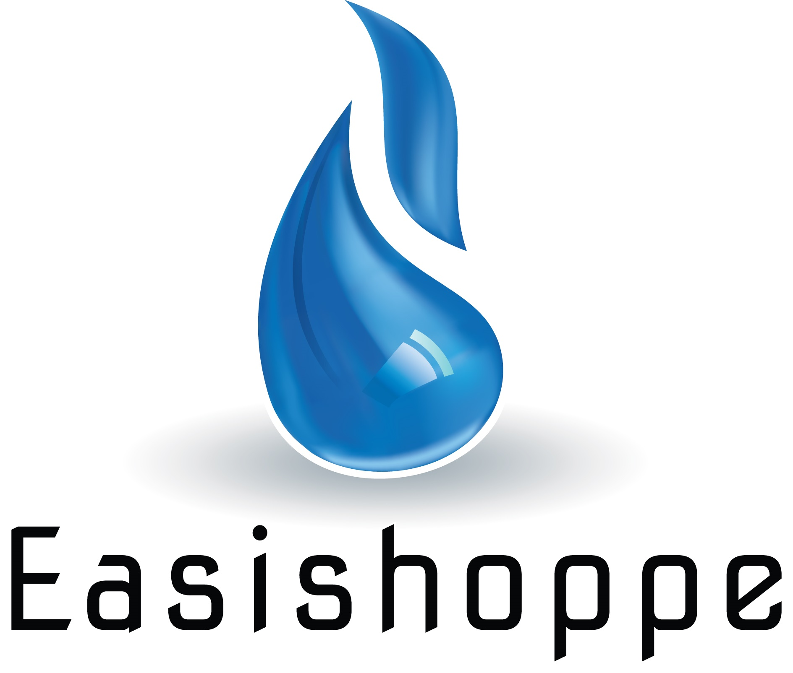

Please enter the password to begin. You will have 15 minutes to complete the test once started.

Candidate Assessment Form
Case Study: Handling Logistics Challenges in Commercial Gas Deliveries
Background: Easishoppe is a commercial gas supplier to
various businesses across Cape Town.
As a member of the operations team,
you are responsible for ensuring timely deliveries,
managing paperwork, and supporting drivers for efficient operations.
This morning, you face two urgent issues:
a delivery truck is delayed due to heavy traffic,
causing a late delivery to 5 star Hotel that relies on the gas for their breakfast run.
The Hotel has called to complain and is growing frustrated.
Additionally, another truck has broken down on its way to a client,
and this delivery is also critical for the client’s operations.
Assignment: How would you manage the delayed delivery to the restaurant? Describe your approach to communicating with the customer and managing their expectations. What steps would you take to minimize the impact of this delay and ensure the delivery is completed quickly? For the truck breakdown, what immediate actions would you take to resolve the situation, and how would you keep the customer informed while organizing a solution? Additionally, considering these types of issues, what proactive measures would you implement to minimize delays and breakdowns in the future? How would you handle multiple logistics challenges at once, and what improvements could you propose to improve Easishoppe’s overall logistics operations?